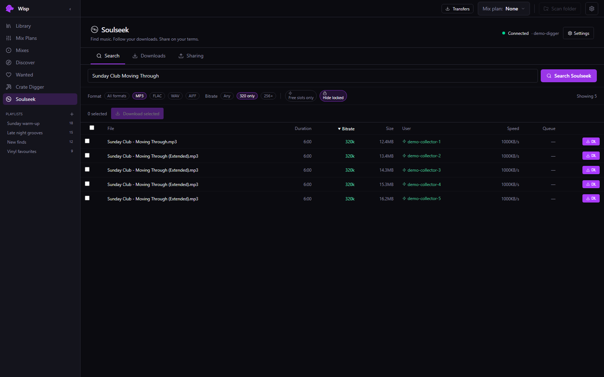
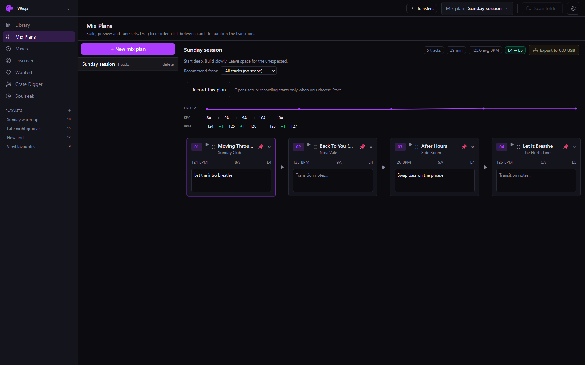
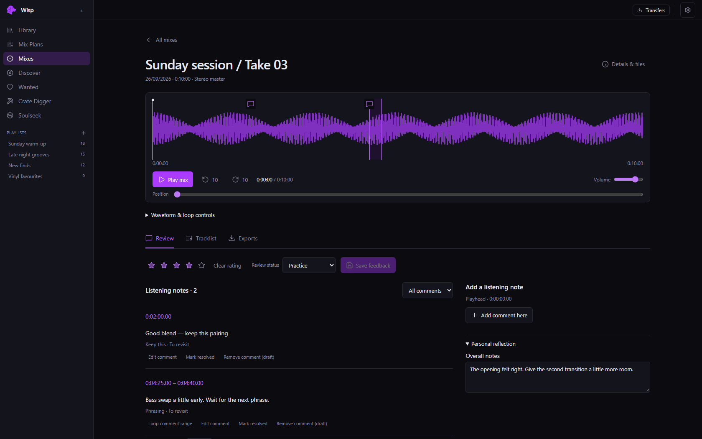

Your collection. A little more together.WISP / Library
The workflow
GOOD SETS START BEFORE YOU PLAY.
That tune you just found. The next track that fits. The
transition you want to try again. Keep it all here.
01 / Find & file
LESS LOST. MORE FOUND.
Give your collection a home. Browse by BPM, key and date added.
Build playlists that make sense to you.
Still digging? Search Soulseek from WISP, follow your downloads
and bring new finds into your library.

Find a track. Keep the good version.
02 / Build the set
A PLAN. NOT A RULEBOOK.
Try a running order, mark your cues and leave yourself transition
notes. Make room for the track you hadn’t planned on playing.
Keep the blueprint separate from what you actually played. A
better next set starts with knowing the difference.

A little preparation. Plenty of room to improvise.
03 / Keep the take
LISTEN BACK. GET BETTER.
Record from your mixer’s audio input. Save a lossless master, then
export a 320 kbps MP3 when it’s time to share.
Rate the mix, leave timestamped notes and build the actual
tracklist. Take what worked into your next plan.

The good bits. The rough bits. The next idea.
From library to USB
TAKE THE SET WITH YOU.
Pick a playlist. Choose your USB. Take your tracks, running order
and memory cues to the decks.
WISP exports legacy CDJ playlists and analysis data, including
overview waveforms. Playback, overview waveforms and memory cues
have been confirmed by the owner on a CDJ-900.
That is one tested setup, not a guarantee for every player or
format. Test your export on your own decks before relying on it
for a gig. WISP is independent software, not affiliated with
Pioneer DJ or rekordbox.